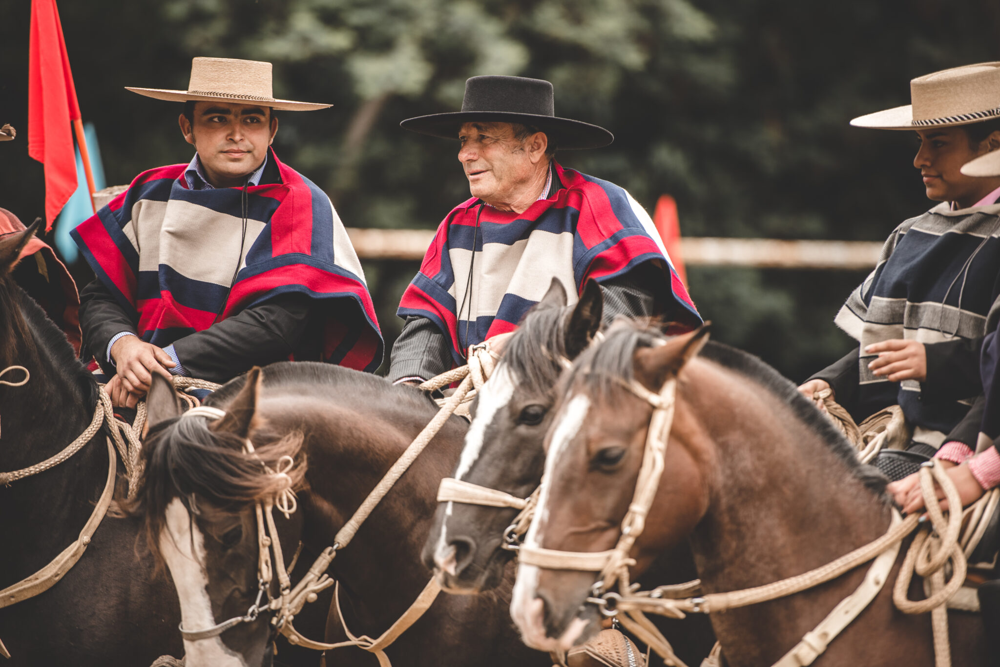

Inicio
¿Que es el Rodeo Chileno?
El rodeo es el deporte ecuestre más reconocido del país. Si bien surgió desde un quehacer propiamente agropecuario, como parte de las tareas cotidianas del campo chileno, fue durante la Colonia que se transformó en un espacio de competencia y recreación. La actividad consiste en que una pareja de jinetes, denominada "collera", montada sobre caballos de raza chilena pura, deben arrear y atajar un novillo en tres oportunidades consecutivas sobre dos quinchas acolchadas al interior de una medialuna, turnándose la atajada y la arreada.
¿De donde se origino el rodeo chileno?
En la década de 1960, por medio del oficio n°269 del Consejo Nacional de Deportes y el Comité Olímpico de Chile, se reconoció al rodeo como disciplina deportiva en sentido estricto, es decir, con jurado, premios, recintos especiales para su desarrollo y reglamentación propia. Esta última comprende normas y especificaciones muy precisas respecto de sus competidores, los ejemplares que participan y la indumentaria que se utiliza.
¿Como funciona el Rodeo?
Principales reglas
La actividad consiste en que una pareja de jinetes, denominada "collera", montada sobre caballos de raza chilena pura, deben arrear y atajar un novillo en tres oportunidades consecutivas sobre dos quinchas acolchadas al interior de una medialuna, turnándose la atajada y la arreada. Los puntos se califican por atributos como el grado de dificultad, reparo, control, técnica, potencia, coraje, espueleo entre muchos otros. Luego estan las diciplinas carrera de barriles, lazo de becerros, derribe de novillos y lazo por parejas.
Imagenes
Videos
Corridas de los Campeones de Chile
Campeones
Los Campeones del Champion del año pasado (2022) fueron:
- 1°Lugar - Luis Eduardo Cortés y Alfredo Moreno de la Asociación Santiago Sur : Montando a Lunática y Bien Pagada
- 2°Lugar - Luis Alfonso Angulo y Alberto Mohr de la Asociación Osorno : Montando a Candelabro y Aristócrata
- 3°Lugar - Pablo Aninat y Alfredo Díaz de la Asociaciones Quillota y Santiago Oriente : Montando a Peumo Marcado y Mala Yerba
Acerca de
Este sitio web fue creado para informar sobre el rodeo chileno
Creado por: Jose Pablo Maira Basualdo - Ultima Actualizacion 08/05/2023